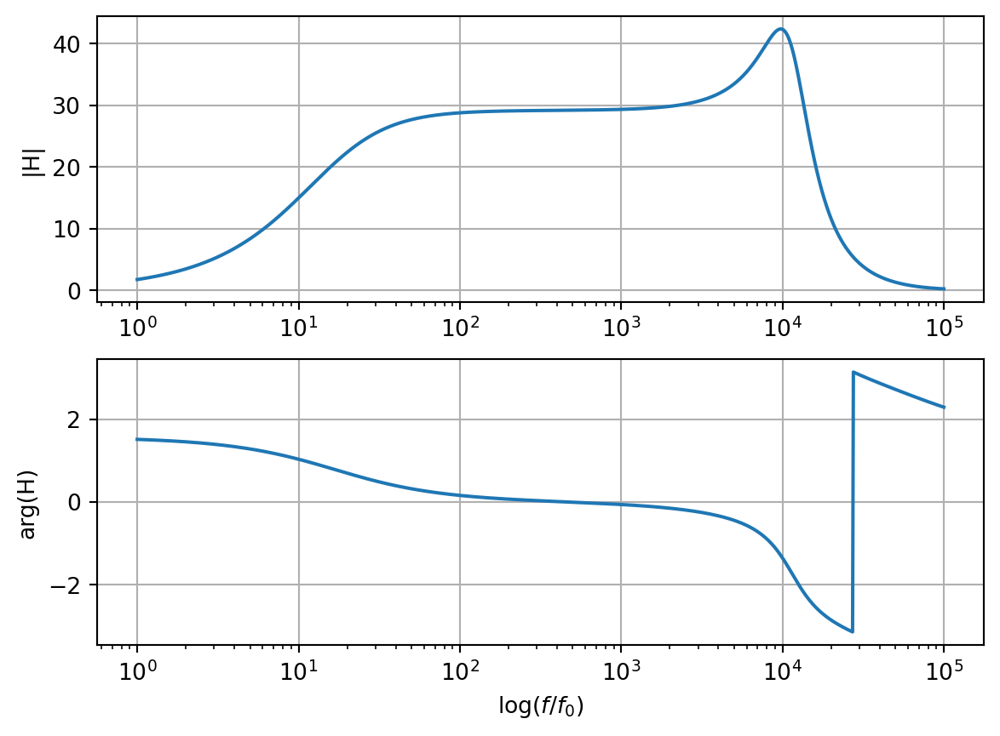
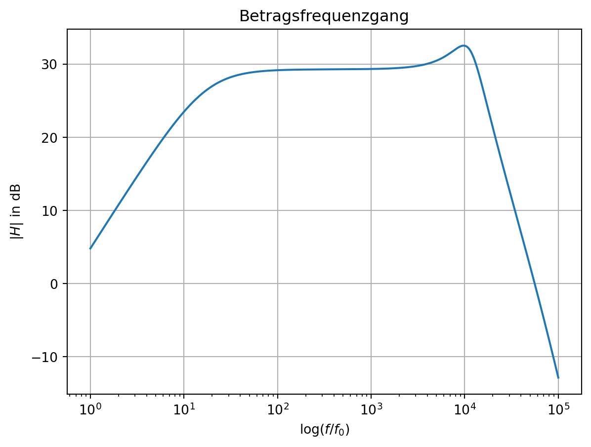

Setzen Sie zur Auswertung und graphischen Darstellung der Aufgaben Python und LTspice ein.
15.1 Resonanztransformator
Berechnen Sie den Frequenzgang der komplexen Amplitude \(\underline{H}_u(f)=U_1(f)/U_0(f)\) der folgenden Transformator-Schaltung eines dynamischen Mikrofons Abbildung 15.1.
Abbildung 15.1: Ersatzschaltung eines dynamischen Mikrofons.
Stellen Sie die Ergebnisse als Funktion der Frequenz grafisch dar:
als Ortskurve in der komplexen Ebene,
als Betrag \(\lvert \underline{H}_u \lvert\) und Phase \(\phi_{H_u}\) über \(\log(f/f_0)\) (normierte Frequenz) und
als Bode-Darstellung \(20 \cdot \log \lvert \underline{H}_u \lvert\) über \(\log(f/f_0)\) (normierte Frequenz).
Bei der Analyse und Erläuterung interessieren Grenzfrequenzen, Eckfrequenzen, Hochpass/Tiefpass-Verhalten, die Resonanz-Güte und die Rolle der einzelnen Komponenten im Hinblick auf die genannten Frequenzen.
Lösung
Um den idealen Tranformator aufzulösen muss man:
\(R_0\) auf die Sekundärseite transformieren; erscheint dort als \(R_{0s}=R_0/\text{ü}^2\) mit ü=1/30.
\(U_0\) durch eine sekundärseitige Ersatzspannungsquelle \(U_{0s}=U_0/\text{ü}\) ersetzen.
/var/folders/bs/dl5x4l2n6xv6ywrg8knjtw440000gn/T/ipykernel_27067/3659505908.py:51: MatplotlibDeprecationWarning:
Auto-removal of overlapping axes is deprecated since 3.6 and will be removed two minor releases later; explicitly call ax.remove() as needed.


15.2 Ersatzschaltbild eines Lautsprechers
Die dargestellte Schaltung in Abbildung 15.3 ist ein vereinfachtes Ersatzschaltbild eines elektrodynamischen Lautsprechers. Dabei repräsentiert \(\underline{Z}_1 = R_1 + j \omega L_1\) die Impedanz der ruhenden Schwingspule und \(\underline{Z}_M\), die Parallelschaltung aus \(R_2\), \(L_2\) und \(C_2\), repräsentiert die dynamisch-mechanischen Eigenschaften des Systems.
Abbildung 15.3: Ersatzschaltbild eines Lautsprechers.
Drücken Sie die Eingangsimpedanz \(\underline{Z}_E\) der Schaltung als Funktion der verwandten Bauteile (\(R_1\), \(L_1\), \(R_2\), \(L_2\), \(C_2\)) und der Kreisfrequenz \(\omega\) aus.
Für niedrige Frequenzen (\(0 \leq f \leq 100\,Hz\)) kann der Beitrag \(\omega L_1\) der Induktivität \(L_1\) zur Eingangsimpedanz vernachlässigt werden. Konstruieren Sie mit dieser Vereinfachung die Ortskurve der Eingangsimpedanz \(\underline{Z}_{E0}\) als Funktion der Kreisfrequenz \(\omega\).
Lösung
\[
Z_{E0} = R_1 + Z_M
\]
Konstruktion der Ortskurve \(Z_{E0}(\omega)\):
\(Y_M\) zeichnen: Gerade
\(Y_M\) invertieren \(\rightarrow Z_M\): Kreis
\(R_1\) addieren \(\rightarrow Z_{E0}\): verschobener Kreis
15.2.3 Wert der Impedanz
Berechnen Sie den Wert der Impedanz \(\underline{Z}_{E0}\) bei der Frequenz \(f\) = 100 Hz.
Lösung
\[
Z_{E0}(f=100\,Hz) = (3,6 - j 4,25) \Omega
\]
15.2.4 Ortskurve
Geben Sie näherungsweise die Ortskurve der Impedanz \(\underline{Z}_E\) als Funktion der Kreisfrequenz \(\omega\) an, inklusive des Beitrags der Induktivität \(L_1\).
Lösung
Für \(f \leq 100\,Hz\) ist \(\omega L_1 \leq 0.125\), daraus folgt für \(f \leq 100\,Hz\) dass \(Z_E \approx Z_{E0}\). Für \(f >> 100\,Hz\) ist \(Z_{E0} \approx R_1\) und \(Z_E \approx R_1 + j \omega L_1\).
15.2.5 Bode-Diagramm
Der Lautsprecher werde aus einer Sinusspannungsquelle mit \(\hat{U}_0\) = 10 V und Innenwiderstand \(R_i\) = 0,5 \(\Omega\) gespeist. Stellen Sie das Verhältnis der Effektivwerte von \(I_R\) und \(I\) sowie den Phasenwinkel von \(I_R\) zu \(I\) als Funktion der Frequenz in einem Bode-Diagramm dar.
Berechnen Sie die abgestrahlte Schallleistung \(P_S = R I^2_{R,eff}\) als Funktion der normierten Verstimmung \(\nu =
\omega/\omega_0 - \omega_0/\omega\), wobei \(\omega_0=(L_2 C_2)^{-1/2}\) ist, und stellen Sie \(P_S(\nu)\) graphisch dar. Wie groß ist die von der Schaltung aufgenommene Wirkleistung bei \(\omega=\omega_0\)?
/var/folders/bs/dl5x4l2n6xv6ywrg8knjtw440000gn/T/ipykernel_27067/2282262599.py:52: MatplotlibDeprecationWarning:
Auto-removal of overlapping axes is deprecated since 3.6 and will be removed two minor releases later; explicitly call ax.remove() as needed.